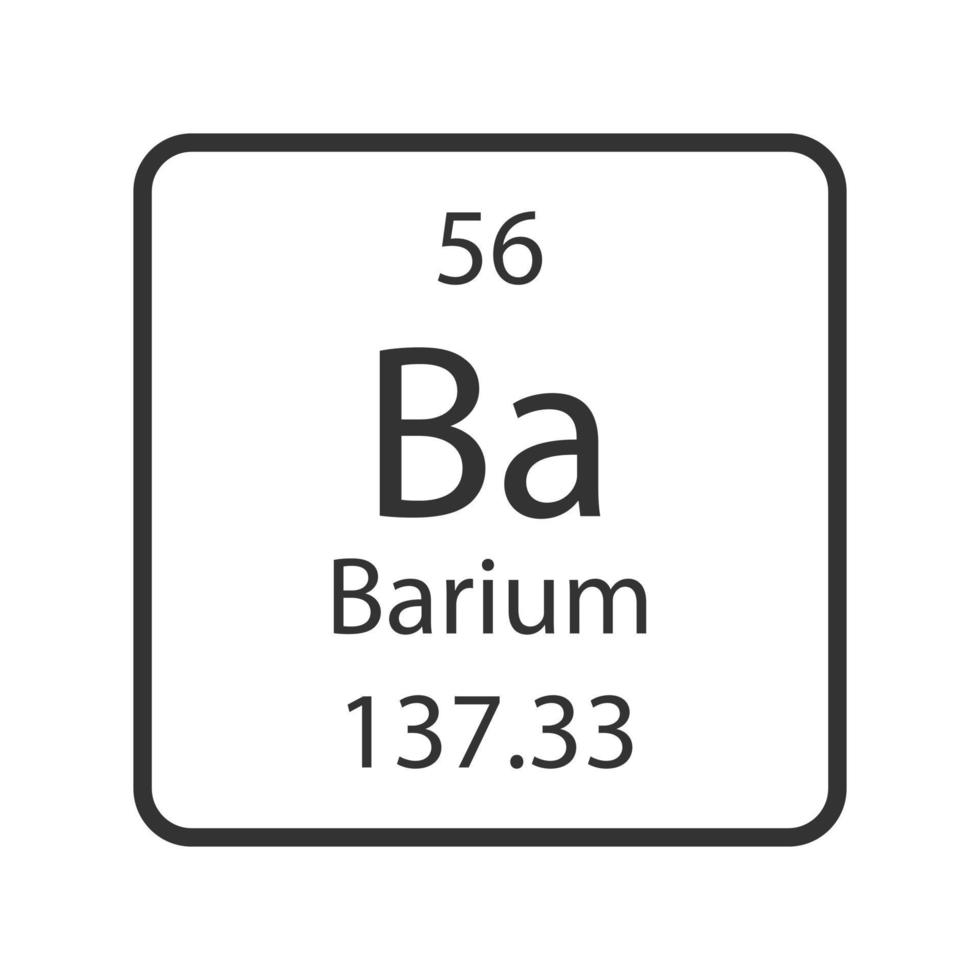
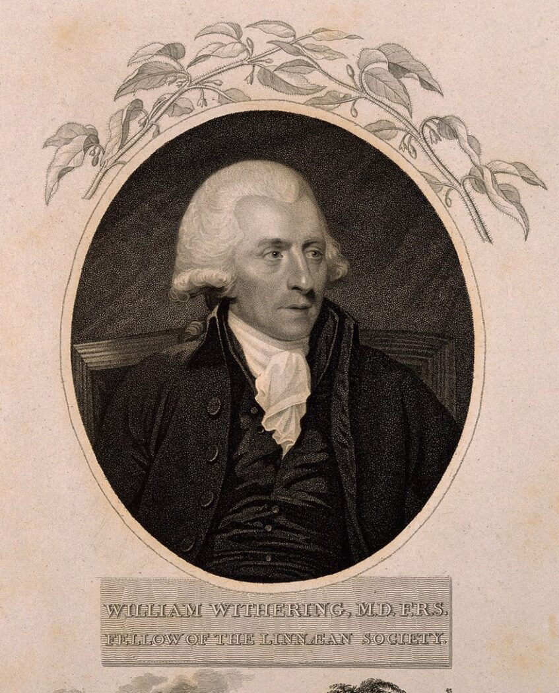
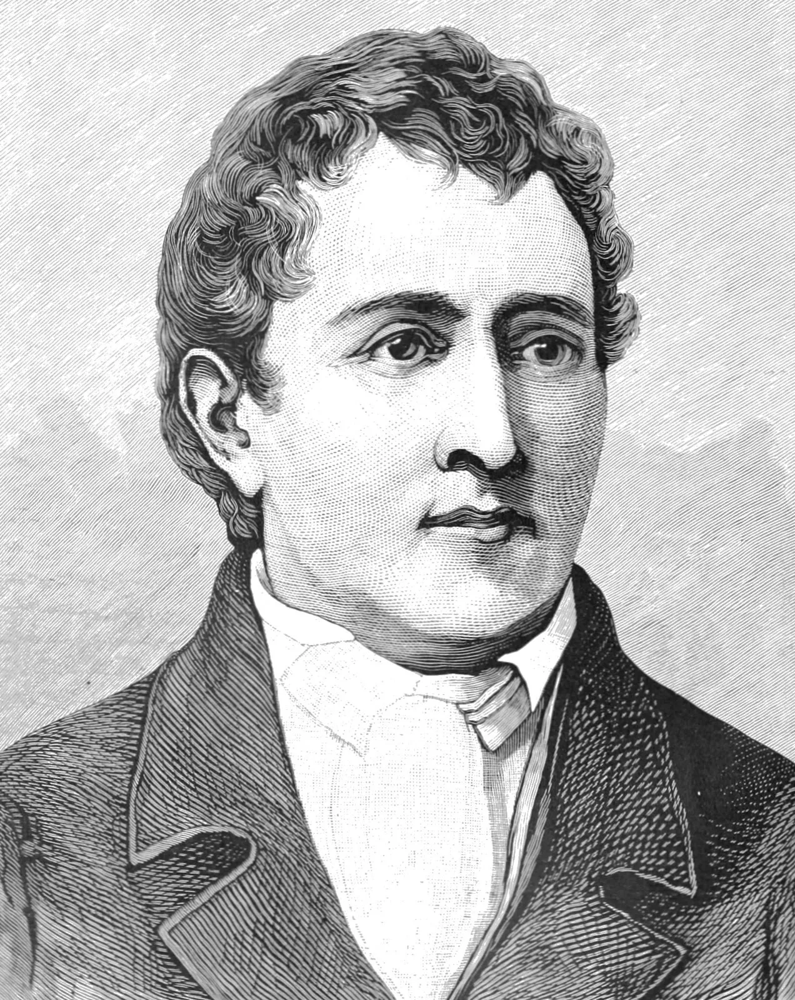
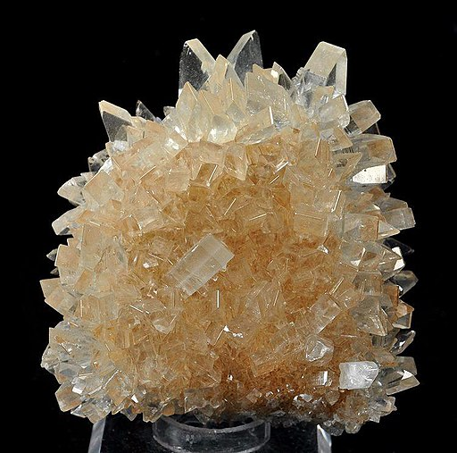

Bário
- Símbolo: Ba
- Número atômico: 56
- Massa atômica: 137,33
- Estado físico: Sólido
- Aparência: Prateada

Características
Observação importante: O bário não é encontrado normalmente em sua forma pura na natureza porque reage facilmente com o ar[cite: 5].
História da Descoberta

Vincenzo Casciarolo
Encontrou próximo a Bolonha, na Itália, uma pedra que apresentava luminosidade no escuro após calcinação[cite: 5]. O mineral ficou conhecido como "pedra de Bolonha" e posteriormente foi identificado como barita (BaSO₄)[cite: 5].

Carl Scheele
Investigou o estranho mineral e concluiu que se tratava do sulfato de um elemento químico até então desconhecido[cite: 5].
Humphry Davy
Isolou oficialmente o elemento bário por meio do processo de eletrólise do óxido de bário[cite: 5].
Ocorrência na Natureza
O bário não é encontrado isolado na natureza e estes minerais constituem suas principais fontes[cite: 5]:

Barita — BaSO₄
Sulfato de bário. É a principal fonte mineral para extração do elemento[cite: 5].
Witherita — BaCO₃
Carbonato de bário. Importante minério natural contendo bário[cite: 5].
Usos do Bário
Indústria do Petróleo
A barita é utilizada na lama de sondagem devido à sua alta densidade, auxiliando na perfuração de poços[cite: 5].
Sinalizadores e Fogos
O nitrato de bário produz uma característica coloração verde-clara durante a queima em fogos de artifício[cite: 5].
Dessecante
O óxido de bário absorve umidade com extrema facilidade, servindo como agente dessecante[cite: 5].
Aplicações Médicas
O sulfato de bário é utilizado em exames radiológicos do trato intestinal por absorver raios X[cite: 5].
Importância e Riscos
Compostos solúveis de bário apresentam alta toxicidade[cite: 5]. O descarte inadequado de resíduos industriais pode ocasionar a contaminação grave do solo e dos recursos hídricos[cite: 5].
No Brasil, em 2003, ocorreu um trágico caso envolvendo o produto contrastante Celobar®, onde a contaminação por sais solúveis de bário causou casos fatais de intoxicação severa[cite: 5].
💡 Você sabia?
A barita recebeu grande importância histórica devido ao fenômeno luminescente observado na famosa "pedra de Bolonha", descoberta no século XVII, que brilhava no escuro após ser aquecida (calcinada)[cite: 5].
Desenvolvedor
Cristian
Apenas um garoto fazendo um trabalho de química e de pw2.
Tutores / Professores
Professor Allan
Um professor feliz de pw2
Professora Elaine
Professora de Química